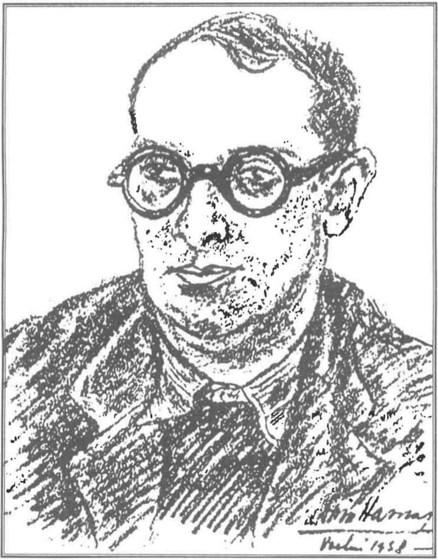

CRITIC, -Ă, critici, -ce, adj., subst. I. Adj. 1. Care apreciază calitățile și defectele (unor oameni, stări, fapte, opere etc.). Critică literară (și artistică) = ramură a științei literaturii care analizează, interpretează, apreciază și orientează fenomenul literar, artistic contemporan în lumina unei concepții estetice1.
Critică în numele cui? De aparențele și minciunile sistemului oficial ne-am săturat! A venit timpul ca noi, tinerii, să vedem cum ne sunt atacate icoanele, cum ne sunt atacați sfinții. Nu judecați după înfățișare, ci judecați judecată dreaptă (Ioan 7:24). Trecând din nou peste stângăcia tinereții noastre, vom căuta să facem judecată dreaptă, critică literară în numele lui Hristos! Gyrul ne-a dat girul să pornim la luptă și să îi apărăm icoana vie și numele, pe care, mai nou, îl pomenim ca Sf. Radu Melodul. Smerenia lui a devenit lucrătoare și astfel nu a fost atacat în critica oficială la fel de mult precum fratele său de cruce, Nichifor Crainic. Cu toate acestea, atacul există și îl vom scoate la iveală!
Și orice duh, care nu mărturisește pe Iisus Hristos, nu este de la Dumnezeu, ci este duhul lui antihrist, despre care ați auzit că vine și acum este chiar în lume. (1 Ioan 4:3)
În articolul precedent am atacat critica oficială comunistă și neo-comunistă pentru războiul său împotriva iubitului nostru Nichifor Crainic?2 Să nu fim înțeleși greșit: nu suntem împotriva criticii ca ramură a literaturii. Suntem împotriva criticii literare care nu îl are ca reper critic pe Hristos. După cum am văzut, critica oficială reprezentată de Eugen Lovinescu, George Călinescu și Nicolae Manolescu este dacă nu atee, atunci este cel puțin eretică.
Tineri întru Domnul, este ceasul de pe urmă, și precum ați auzit că vine antihrist, iar acum mulți antihriști s-au arătat; de aici cunoaștem noi că este ceasul de pe urmă. (1 Ioan 2:18) Astfel, cei trei critici oficiali se înfățișează ca purtători ai duhului lui antihrist, antihriști ai istoriei literaturii române, lupi în haină de miel, unul fiind mai periculos decât altul: Lovinescu vine cu ispita europenismului anti-național și anti-ortodox și a reînvierii raționalismului maiorescian, stârpit din Junimea de cuviosul Simion Mehedinți, Călinescu se face apostol al marxismului criminal și urmărește o „îmbunătățire” a Ortodoxiei prin comunizarea Sa, iar Nicolae Manolescu critică orice atitudine ortodoxă, dar le laudă și le susține pe cele catolice sau heterodoxe, devenind unealta ecumenismului eretic. Toți, ucigași de Hristos, cum spune și Ioan Ianolide: „Antihristul este ucigașul lui Hristos”3, care ne avertizează că Cine nu este cu Mine este împotriva Mea (Matei 12:30). Concluzia: critica oficială este împotriva lui Hristos, deci antihristică!
Eugen Lovinescu scrie despre Gyr că acesta „afirmă un tradiționalism regional teoretic și o putință de a se scoborî în folclor, în basm, în legendă, de a se hrăni dintr-o sevă autohtonă”4, o putință pe care nu o are Eugen Lovinescu, fiind posedat de diavolul european, dar care poate o tânjește cu ură și invidie în adâncul sufletului său înecat în raționalism ateu. Ortodoxă de două mii de ani, seva autohtonă din care se hrănește Radu Gyr este apa de la fântâna lui Iacov și hrana pe care Hristos o dă ucenicilor Săi. Lovinescu se comportă ca femeia samarineancă doar când întreabă: Cum Tu, care ești iudeu, ceri să bei de la mine, care sunt femeie samarineancă? Pentru că iudeii nu au amestec cu samarinenii. (Ioan 4:9) Dar nu vrea să bea din apa vie și nematerialnică pe care i-o oferă Hristos. Decât să facă voia lui Dumnezeu, preferă precum iudeii, să îl urască pe mărturisitorul Radu Gyr care se hrănește cu mâncarea arătată de Mântuitorul apostolilor, despre care spune că aceasta este să fac voia Celui ce M-a trimis pe Mine și să săvârșesc lucrul Lui (Ioan 4:34). Și cum nimeni nu poate să slujească la doi domni, căci sau pe unul îl va uri și pe celălalt îl va iubi, sau de unul se va lipi și pe celălalt îl va disp@rețui și nu putem să slujim lui Dumnezeu și lui mamona (Matei 6:24), ne este foarte clar faptul că Eugen Lovinescu slujește lui mamona, din moment ce nu slujește lui Dumnezeu.
Pentru mărturisirea lui Hristos în poezia lui Gyr, Lovinescu nu poate spune decât că „ceea ce-i lipsește acestui temperament vehement și ciclic e disciplina artei sale, măsura; facilitatea, pe care i-o dă o virtuozitate verbală, fără frâna gustului, se transformă în erupție și prolixitate”5 Temperamentul vehement, erupția și prolixitatea sunt deci pentru Eugen Lovinescu elementele de bază ale unei mărturisirii ortodoxe.
Și o ultimă remarcă stilistică din partea antihristului: „Acum, în urmă, poetul pare totuși a fi scăpat întrucâtva de gongorismul și alegorismul didactic al primelor sale încercări lirice”, apărută ca replică la popularitatea de care începuse să se bucure Radu Gyr în manualele de literatură română, fiind unul din autorii incluși în majoritatea manualelor de lireratură română interbelice6.
La început, înainte de a arunca cu veninul urii sale satanice de inspirație maioresciano-atee în Radu Gyr, spune despre el că este „cel mai activ și mai plin de conștiință oltenească”, ca și cum dacă „cel mai plin de conștiință oltenească” este un ratat în viziunea lovinesciană, toți oltenii sunt niște ratați. Și iată că așa am aflat de unde a început programul de marginalizare al oltenilor prin „bancuri cu olteni” și … Istoria literaturii române contemporane după Eugen Lovinescu7.
Despre crezul marelui marxist George Călinescu știm din războiul său împotriva lui Nichifor Crainic. Ca de obicei, anticipează metodele lui Roller, iar acum omite perioada de glorie a lui Radu Gyr8. El nu face referire decât la începuturile sale poetice pe care le atribuie simbolismului și unei imitații de Elena Farago, afirmație bazată pe faptul că în timpul liceului, la Craiova, Radu Gyr frecventa cercul literar al poetei.
La Călinescu, versurile pline de Ortodoxie și de Neam ale lui Gyr conțin „abstracțiuni subliniate, într-o compoziție dezlânată, interminabilă, gata de a luneca pe panta prețiozității”9. Mărturisirea lui Hristos nu este dezlânată, dar interminabilă este!
Elevul lui Marx ne transmite șocat că a găsit „o remarcabilă lirică chinuitoare”, „tăind nemilos în acest morman de crăci”10. Vă dați seama ce ni se bagă pe gât la școală? Că Radu Gyr este un „morman de crăci”! „Remarcabila lirică chinuitoare” este sabia Arhanghelului Mihail, întrupată în poezia lui Radu Gyr și care vine, precum Arhanghelul răzbunător, să se certe cu diavolul pe dreptul lui Hristos la un loc în literatură, precum Arhanghelul Mihail s-a certat pentru trupul lui Moise. „Mormanul de crăci” este pentru Călinescu dogmatica, liturgica și istoria ortodoxă, materii pe care după cum am observat, în războiul istoriei literaturii române împotriva lui Nichifor Crainic, că George Călinescu nu le stăpânește, făcând pe teologul și căzând în erezie.
La final Călinescu este invidios că Radu Gyr, „scrie abundent” și îl acuză că face asta „acum cu infiltrații argheziene, făcând abuz de vociferație” și regăsim acel clișeu heterodox care acuză marii mărturisitori de panteism, clișeu folosit și de antihristul Călinescu când spune despre Gyr că acesta „pillatizează, exuberând panteistic”.11
La orizontul criticii literare contemporane se înfățișează Nicolae Manolescu. Dacă a reușit să îl detracteze pe Crainic în mai multe pagini, despre Radu Gyr nu spune prea multe. Îl face uitat, iar smerenia lui Gyr își face efectul: nu este la fel de atacat ca în istoriile lovinesciene și călinesciene, dar este uitat, el, poetul care a însuflețit Aiudul și miile de tineri și intelectuali care l-au umplut. Desigur, pentru mărturisirea sa din lume, înainte de 1945, poetul este văzut ca un plagiator de „clișee poetice ortodoxiste”12 și se râde de „concepția tardivă” a tradiționaliștilor care cred că Ortodoxia poate salva poezia națională de înstrăinare.13
Călinescu spunea în prefața la istoria sa „că literatura poate sluji drept cea mai clară hartă a poporului român”. De aceea avem noi o imagine așa proastă asupra noastră ca popor? Că acceptăm ca oglindă istoria lui Călinescu plină de jegul ideologic al marxismului ateu? Manolescu mărturisește la un moment dat: „nu mă consider, în ce mă privește, decât unul dintre zecile de cartografi, silitor și modest benedictin (mândru catolic — n.n.) al ideii că fiecare se cuvine judecat după ce a realizat, oricât de mare ar fi depărtarea la care se află harta lui de harta ideală pe care, în naivitatea lor, iubitorii de literatură o cred posibilă.”14 Așa îl și judecăm pe d. Manolescu, după spusele dumisale, „după ce a realizat”: un război împotriva lui Radu Gyr și a Generației interbelice. Iar ideea că o hartă ideală a literaturii este imposibilă, este complet atee și anarhistă. Nu are rigoarea ierarhică a Ortodoxiei care Îl pune pe Hristos deasupra tuturor, ca Arhetip. Harta literaturii române se face după următorul criteriu cartografic și duhovnicesc: cu Hristos sau fără Hristos, ortodox și românesc sau eretic și anti-românesc. Dacă nu era închis Radu Gyr sau trăia mai mult, astăzi am fi citit Istoria critică a literaturii române după Radu Gyr, poate dintr-un manuscris ascuns de furia Securității în peretele de beton, în loc să citim scrierile antihristice ale domnului Manolescu.
Criticul încearcă mai apoi să despartă calitatea poetului de comandant legionar de două aspecte fără de care nu ar fi putut fi un legionar desăvârșit, adică un bun român, Ortodoxia și nostalgia pentru Basarabia românească, autorul susținând că acesta a fost arestat doar pentru că a fost legionar.15 Dar ce înseamnă să fii legionar? Tot „fanatic”, „fascist”, „hitlerist”, „antisemit”, „xenofob”, „intolerant'? ÎPS Bartolomeu Anania, care l-a cunoscut îndeaproape și l-a iubit pe Radu Gyr, ca pe un profesor ce era pentru toți tinerii, mărturisește: „Mărturisesc însa că în Frăția de Cruce din Seminar nu se făcea politică, nici antisemitism, ci doar educație, și că nu am avut de învățat decât lucruri bune: iubire de Dumnezeu, de neam și de patrie, corectitudine, disciplină în muncă, cultivarea adevărului, respect pentru avutul public, spirit de sacrificiu."16 (s.n.) Numai minciuni și acuze la adresa Mișcării Legionare, cum spunea părintele Justin, doar pentru că istoricii noștri mai vechi sau unii mai noi au avut grijă să denatureze adevărul. Au făcut-o cu un scop: generațiile care le-au urmat (sau vor urma) să nu știe adevărata istorie a românilor. Nu s-a scris „fără ură și părtinire”, așa cum ar trebui să o facă adevărații istorici.” Dacă o generație întreagă a fost electrizată de această credință puternică, de ce nu am fi și noi? Dacă o generație întreagă a ajuns martirizată și acum se află în sinaxare, de ce nu am urma și noi același drum spre sfințenie, urmând sfinții contemporani, tineri ca noi și cu aceleași idealuri? Asta și dorim să facem!
Generația noastră merge spre mucenicie pe axa Horea — Tudor — Iancu — Codreanu — Moța — Marin — Gyr — Nae Ionescu — Vulcănescu — Crainic — Mehedinți — Gafencu — Ianolide — Oprișan — Felea — Stăniloae — Gheorghe Calciu — Arsenie Papacioc — Justin Pârvu, nume care au făcut istoria modernă și contemporană hristocentrică în jurul lor, nume care nu vor fi șterse niciodată din inimile noastre!
Vă dați seama câte mijloace a folosit și folosește oculta mondială care se închină la Beelzebut pentru a șterge sau a falsifica adevărul despre Generația interbelică? Cenzură, agenți europeni sau sovietici, reviste și propagandă europeană sau sovietică, exterminare fizică, Securitatea și multe alte mijloace satanice. Rodul lor: o generație de sfinți, necunoscută tuturor, cu moaște din care izvorăște mir bine-mirositor, care țipă la noi să ne trezim și să îi cinstim, să ne punem ca scop comun „Învierea Neamului în Iisus Hristos”!

Trăim pentru aceeași credință pe care o afirma Radu Gyr la procesul intentat de puterea ocultă comunistă: „Domnule Președinte, domnilor judecători ai poporului, în inchizitoriul său de joi seara (31 mai), onorata acuzare a spus răspicat: «Dacă există credință adevărată, atunci să fie absolvită». Și a mai spus acuzarea: «Sunt prăbușiri de idealuri, de credințe, dar numai pentru curați». Într-adevăr, sunt naufragii sufletești. Eu am avut o credință. Și am iubit-o. Dacă aș spune altfel, dacă aș tăgădui-o, dumneavoastră toți ar trebui să mă scuipați în obraz. Indiferent dacă această credință a mea apare, astăzi, bună sau rea, întemeiată sau greșită, ea a fost pentru mine o credință adevărată. I-am dăruit sufletul meu, i-am închinat fruntea mea. Cu atât mai intens sufăr azi, când o văd însângerată de moarte.”17
Nu ați putut omorî Generația interbelică, nu veți ucide nici sufletele noastre! Pentru că Mântuitorul ne-a zis că unde sunt doi sau trei, adunați în numele Meu, acolo sunt și Eu în mijlocul lor (Matei 18:20). Hristos este cu noi, în Biserica pe care nici porțile iadului nu o vor birui (Matei 16:18), în Biserica Ortodoxă! Și precum Generația interbelică s-a adunat în numele lui Hristos, așa ne adunăm și noi după modelul profesorilor și al sfinților noștri. Și nu sunteți voi în stare să omorâți atâția dintre noi, cât suntem noi în stare să murim pentru credința noastră! Generația interbelică trăiește astăzi prin opera și jertfa ei, sădită adânc în sufletele generației noastre, generația neașteptată, generația de după '89, pe care ați crezut că puteți să o spălați pe creier și să o subjugați satanei. Iată că pentru rugăciunile Prea Sfintei Născătoare de Dumnezeu și pururea Fecioara Maria și ale Sfinților Români din închisori nu se va întâmpla aceasta!
Pentru că noi credem în cuvintele mucenicului care viața pentru legea strămoșească și-a pus zicând: „cel ce luptă, chiar singur, pentru Dumnezeu și Neamul său nu va fi învins niciodată”, care acum, biruitor, cu îngerii în ceruri, lui Dumnezeu neîncetat îi cântă: Aliluia!
Pentru că noi credem cu tărie în cuvintele altui mucenic, Constantin Oprișan:
Să nu te-ntorci din cale cînd Duhul Rău te minte,
Căci vei rămîne pururi în a Sodomei carceri;
Prin fier, prin foc, prin apă, dar numai înainte,
Căci drumurile-n spirit nu suferă întoarceri!
Pentru că Radu Gyr ne-a învățat încăpățânarea sfântă, care ne ferește de lepădarea de Hristos și ne dă putere de mărturisire, cu prețul vieții, pe noua Golgotă a Neamului Românesc18, prin poezia Îndemn la luptă:
Nu dor nici luptele pierdute,
nici rănile din piept nu dor,
cum dor acele brațe slute
care să lupte nu mai vor.
Atunci când inima ta cântă,
ce-nseamnă-n luptă-un braț înfrânt,
ce-ți pasă-n colb de-o spadă frântă,
când te ridici c-un steag mai sfânt?
Înfrânt nu ești atunci când sângeri
și nici când ochii-n lacrimi ți-s,
adevăratele înfrângeri
sunt renunțările la vis.
Iar noi nu renunțăm la vis, noi nu renunțăm la „o Țară ca soarele sfânt de pe cer”!
1 Cf. Dicționarul explicativ al limbii române, ediția a II-a, Academia Română, Institutul de Lingvistică „Iorgu Iordan”, Editura Univers Enciclopedic, 1998.
2 Vezi articolul Istoria literaturii române și alte războaie împotriva lui Nichifor Crainic în AXA, nr 40.
3 Ianolide, Ioan, Deținutul profet, Ed. Bonifaciu, București, 2009, p. 29.
4 Lovinescu, Eugen, Istoria literaturii române contemporane, Ed. Litera, Chișinău, 1998, p. 93.
5 Ibidem.
6 Ibidem.
7 Ibidem.
8 Călinescu, George, Istoria literaturii române de la origini până în prezent, Ed. Minerva, București, 1982, p. 868.
9 Ibidem.
10 Ibidem.
11 Ibidem.
12 Manolescu, Nicolae, Istoria critică a literaturii române, Ed. Paralela 45, Pitești, 2008, p. 655.
13 Ibidem.
14 https://www.dol.ro/carti/beletristica/literatura/istoria-critica-a-literaturii-romane-5-secole-de-literatura-ygea01821.html
15 Manolescu, Nicolae, op. cit., p. 1300.
16 https://apologeticum.wordpress.com/2010/02/17/minunea-prin-care-a-luat-nastere-miscarea-legionara-marii-duhovnici-ai-romaniei-despre-legionari-si-capitan/
17 Radu Gyr, Ultimul cuvânt la Tribunalul Poporului, sâmbătă, 2 iunie 1945, în Adevărul literar și artistic, 6 martie 1994.
18 Pe care Neamul este răstignit de Noua Ordine Mondială și de toată oculta.
AXA NOASTRĂ: ÎNTRE DUMNEZEU ȘI NEAMUL ROMÂNESC